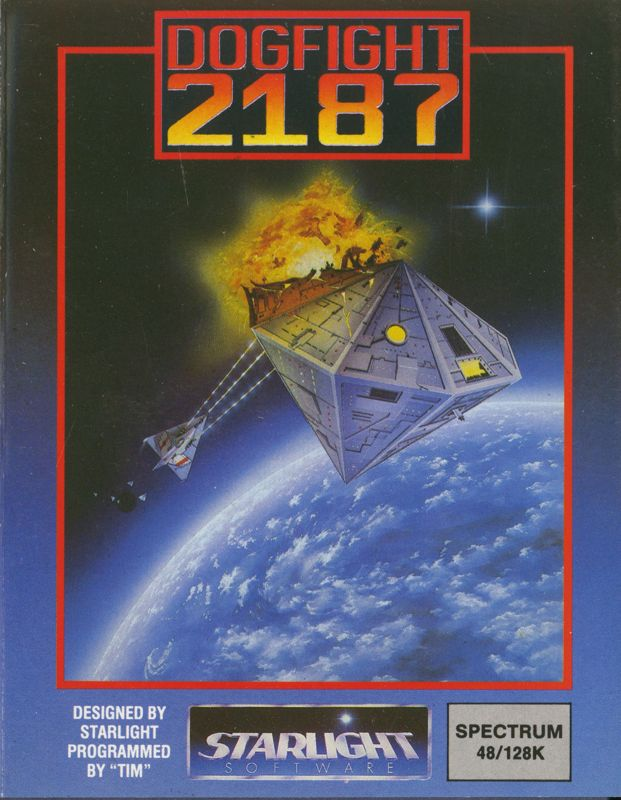

Dogfight 2187
Research in progress. Dogfight 2187 appeared in 1987 under the Starlight label. The catalogue credits Starlight. Known catalogue formats: Commodore 64, Amstrad CPC, ZX Spectrum. This holding page will be expanded as contemporary material and first-hand recollections are reviewed.